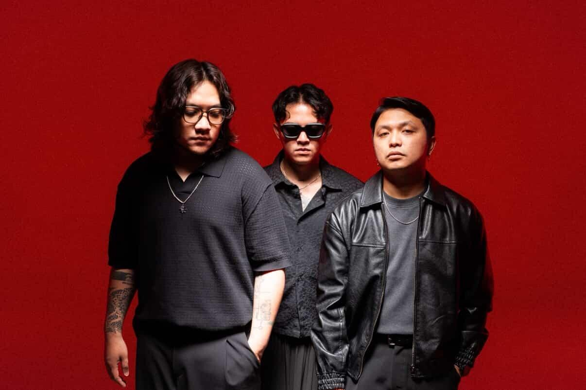

510 adalah band re-branding dari band Slap It Out asal Palangkaraya. Band ini dibentuk kembali di Bandung dengan formasi 3 orang yakni Faizal Permana, Pras Goldinantara, dan Winaldy Senna yang dimana Winaldy Sena pada Desember 2025 memutuskan untuk keluar dari 510.
Faizal Permana adalah vokalis utama dari 510 yang dikenal dengan karakter vokal emosional dan energi panggung yang kuat. Ia menjadi salah satu sosok utama di balik identitas musikal 510 sejak band ini direbranding dari Slap It Out di Bandung.
Pras Goldinantara adalah gitaris 510 yang membawa warna khas pada aransemen musik band ini. Permainan gitarnya yang dinamis menjadi elemen penting dalam membangun nuansa lagu-lagu 510.
Winaldy Senna merupakan drummer awal dari formasi 510 yang berperan dalam membangun fondasi ritme band ini. Kontribusinya dalam periode awal membantu membentuk karakter musikal 510 sebelum akhirnya ia memutuskan keluar dari band pada Desember 2025.
Ronal Adrian sebelumnya merupakan additional bassist dari 510 sebelum akhirnya ia diresmikan menjadi personil tetap setelah keluarnya Winaldy Senna dari 510. Perpaduan teknik Slap dan Picking nya ketika bermain menjadikan lagu - lagu 510 terasa penuh dan harmonis.